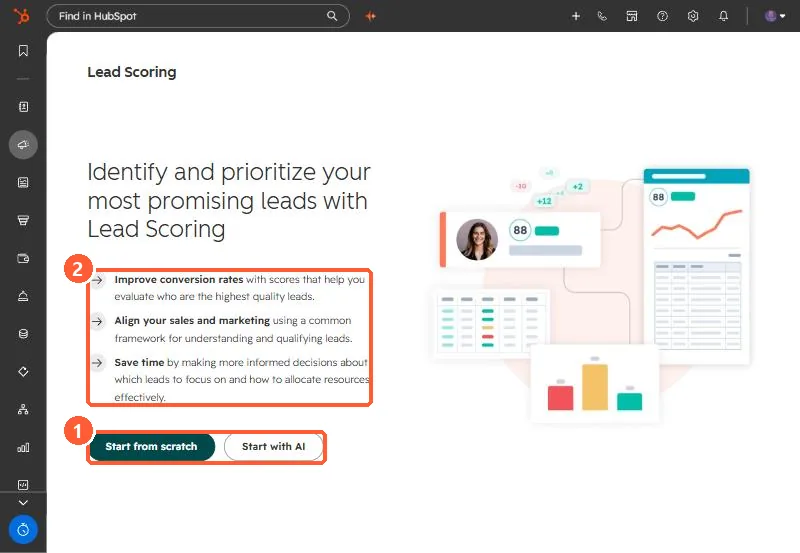
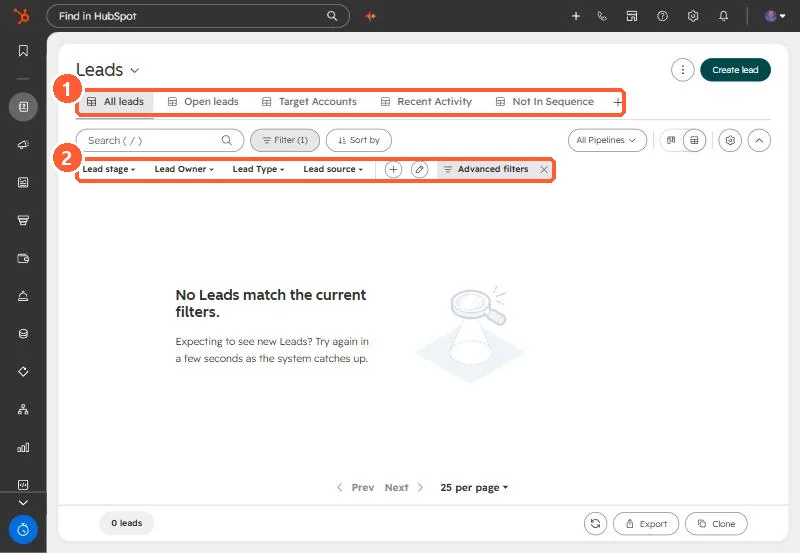

Short answer
HubSpot has two separate tools that both get called "leads". Lead scoring (Marketing, Lead Scoring, Marketing Hub or Sales Hub Professional and up) gives contacts, companies or deals a number: an engagement score from actions, a fit score from property values, or a combined score labelled A1 to C3. The leads object (Sales Hub Professional and up) is a separate record attached to a contact or company that tracks one sales attempt through New, Attempting, Connected, Qualified and Disqualified. Use the score to decide who is ready, and a lead record to work them.
1. Lead scoring: start a score
Go to Marketing, Lead Scoring. With no scores yet, HubSpot offers Start from scratch or Start with AI (1). You need Edit permissions for Lead Scoring, and the kinds and number of scores you can create depend on your subscription.


2. Engagement, fit or combined
| Score | Based on | Labels |
|---|---|---|
| Engagement | Actions: website visits, subscribing, CTA clicks, marketing email opens and similar events | High, Medium, Low |
| Fit | Property values: job title, company size, annual revenue | High, Medium, Low |
| Combined | Both. Stores a total, a fit value and an engagement value | A1 to C3 |
In combined scores the letter is fit and the number is engagement: A1 is a great fit and very engaged, C1 is very engaged but a poor fit, A3 is a great fit who has not engaged yet. Each score creates a property, and setting thresholds adds a color-coded threshold property, so you can use scores in views, segments, workflows and reports.
3. Build the rules
- Click Create score and pick the object and score type.
- Choose a score limit: from -100 to 100 up to -10,000 to 10,000. Negative points are allowed, for example for a competitor's email domain.
- Add groups of rules. Each group can have its own maximum (100 points by default), so one signal cannot dominate the score.
- Set thresholds for High, Medium and Low (or A to C and 1 to 3).
Score decay is available for engagement and combined event groups. It lowers an event's points as it ages, at intervals of 1, 3, 6 or 12 months (30-day months). It does not work with segment membership criteria.
When you turn a score on or edit it, HubSpot scores existing records retroactively from current and historical data, then keeps updating as properties and actions change.
AI scoring for contact engagement and fit scores needs Marketing Hub Enterprise and at least 50 contacts, 25 converted and 25 not.
4. The leads object
A lead record cannot exist on its own: it always has a primary association with a contact or company. The leads index has default views for All leads, Open leads, Target Accounts, Recent Activity and Not In Sequence (1), and filters by lead stage (2):


- Create leads from the contacts index (select contacts, Create leads), the leads index, the sales workspace's Leads tab, or a workflow's Create record action. Creating from the contacts index and the sales workspace needs an assigned Sales seat.
- Owner: with Sync lead owner with contact or company owner on, users only see and create leads for records they own.
- Pipeline automation (Settings, Objects, Leads, Pipelines, Automate) can move leads to the next stage when reps act, for example emailing a New lead moves it to Attempting, and can create a follow-up lead. Moving a lead to a qualified stage can prompt deal creation.
5. How the two fit together
- Lifecycle stage describes the contact or company. A lead record describes one attempt to sell to them. One contact can get a new lead after an earlier one was disqualified.
- To hand scored contacts to sales, a workflow can enroll contacts whose combined score reaches A1 or A2 and create a lead with the Create record action, so they show up in the sales workspace.
6. What is changing for 2027
- Scoring covers deals. Scores work on contacts, companies and deals. HubSpot's own example is a deal score built from the company's industry and whether associated contacts are decision makers who recently met your sales team.
- AI-built scores. Start with AI drafts rules, and AI scoring (Enterprise) learns from your converted contacts.
- Leads are the sales workspace's unit of work. The sales workspace's Leads tab runs on lead records, so teams that only use lifecycle stages do not get those views.
Common questions
What does C1 mean?
Low fit (C), high engagement (1). Very active, but not your target profile.
Can a score go negative?
Yes. Score limits run from a negative minimum, such as -100, to the matching maximum.
Do I need the leads object if I use lifecycle stages?
Not to track stage. But the sales workspace's Leads tab and lead pipeline automation work on lead records.
Why did old activity raise scores right after I created one?
New and edited scores evaluate records retroactively. Use score decay if old events should count less.